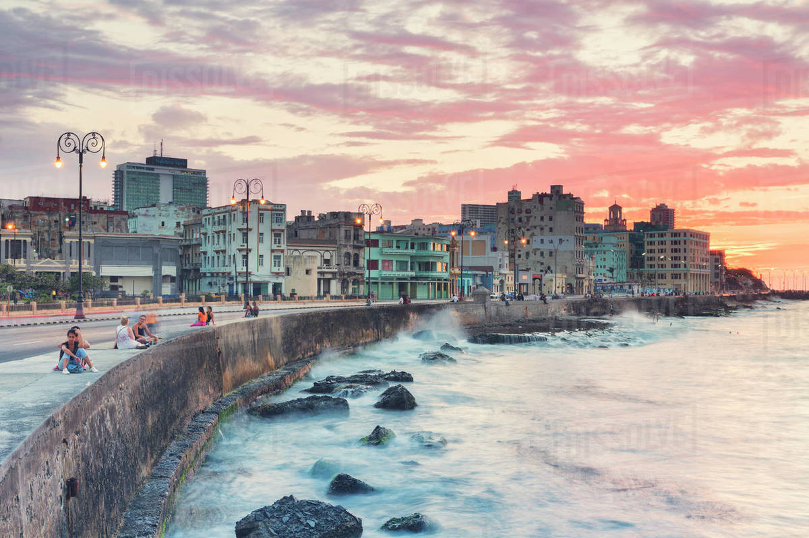
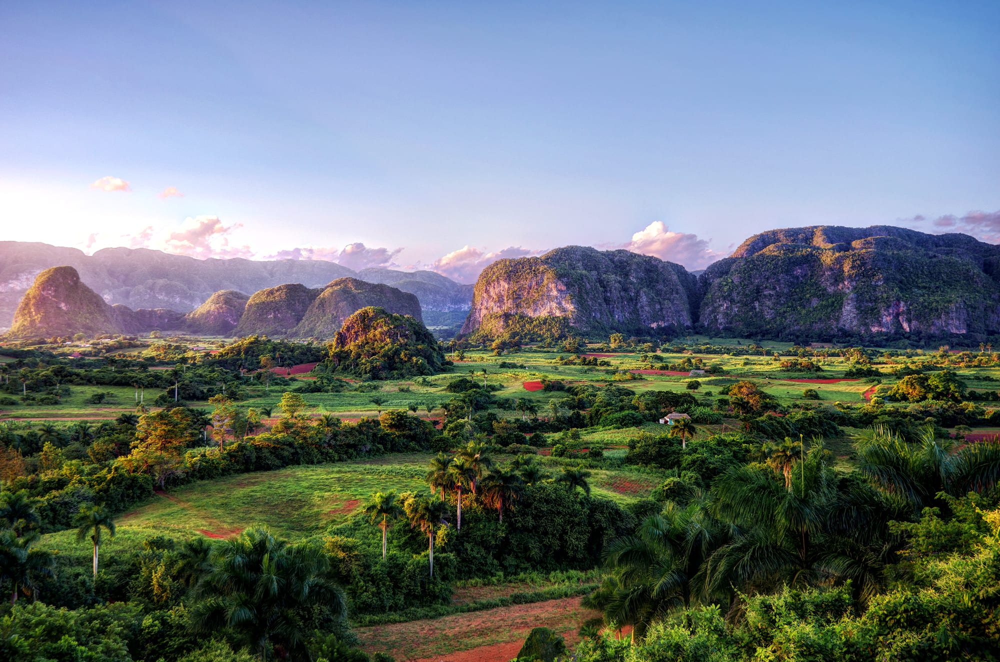
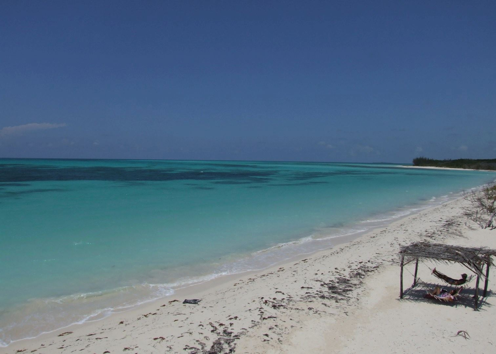

CUBA
MALECON
Construction of the Malecón began in 1901, during temporary U.S. military rule.[3] The main purpose of building the Malecón was to protect Havana from the sea.[3]
To celebrate the construction of the first 500m section of the Malecón, the American government built a roundabout at the intersection of Paseo del Prado. According to architects of the period it was the first roundabout in Cuba to be constructed with steel-reinforced concrete. Bands played Cuban melodies there every Sunday. The Miramar Hotel was built in front of the roundabout. It was the first hotel in Cuba where the waiters wore tuxedos (dinner jackets) and vests (waistcoats) with gold buttons, and it was very fashionable for the first 15 years of independence.[3]

VINALES VALLEY
Tobacco and other crops are cultivated on the bottom of the valley, mostly by traditional agriculture techniques that have been in use for several centuries. These techniques allegedly make for higher-quality tobacco than if mechanical methods are used.[1] The valley is dotted with small farms and villages which have been occupied since the time of the 'conquistadores', maintaining some vernacular colonial-era architecture.[1] The culture of the valley was likewise influenced by a mixture of cultures: indigenous peoples, African slaves, and the Spanish colonizers.[1]

PLAYA VARADERO
Varadero is a two-hour drive east of central Havana. It is situated on the Hicacos Peninsula, between the Bay of Cárdenas and the Straits of Florida, some 140 km east of Havana, at the eastern end of the Via Blanca highway. The peninsula is only 1.2 km wide at its widest point and is separated from the island of Cuba by the Kawama Channel, separated from the mainland by the Laguna Paso Malo. This spit of land extends more than 20 kilometers from the mainland in a northeasterly direction and its tip, Punta Hicacos, is the northernmost point of the island of Cuba. Varadero's town has three longitudinal avenues, intersected by 69 cross streets.[4] At the northeastern end of the peninsula there is a nature reserve with virgin forests and beaches

CAYO LEVISA
Cayo Levisa is a cay in Pinar del Río Province, Cuba. Accessible only through boats from Palma Rubia, the white sand beaches on its north coast attract tourism. It has several snorkeling and diving sites. It is part of the Colorados Archipelago coral reef and well known for its black coral.[1] The cay is roughly 1.5 km² (150 hectares) in size and 4.2 km long.[2][3] It is several hundred yards wide in most points,[4][5] with a maximum width of 750 m and a minimum of 280 m.[3] It is located roughly 150 km west of Havana.[1] Swamps cover more than three quarters of the surface of the island; the south side is inaccessible due to a forest of mangroves.[6]

PASEO DIL PARDO
The Paseo del Prado is one of the main boulevards in Madrid, Spain. It runs north–south between the Plaza de Cibeles and the Plaza del Emperador Carlos V (also known as Plaza de Atocha), with the Plaza de Cánovas del Castillo (the location of the Fuente de Neptuno, and of the Ritz and Palace five-star hotels) lying approximately in the middle. The Paseo del Prado forms the southern end of the city's central axis (which continues to the north of Cibeles as the Paseo de Recoletos, and further north as the Paseo de la Castellana). It enjoys the status of Bien de Interés Cultural (BIC), and as part of a combined UNESCO World Heritage Site with Buen Retiro Park.